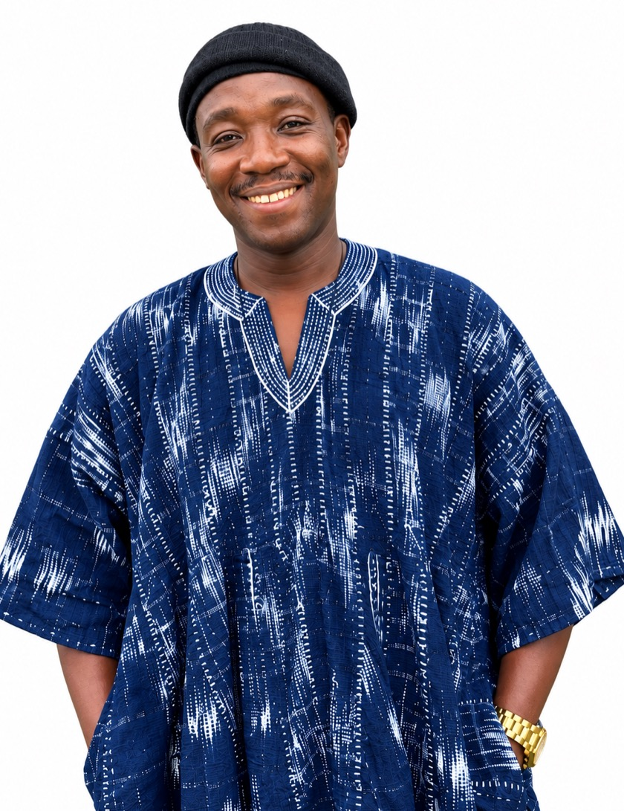

01 · Bench & brain
Alzheimer’s disease & the gut–brain axis
- Microbiome dysbiosis across gut and oral niches
- Gene expression & protein aggregation in 3xTg-AD models
- African medicinal plants — Rauwolfia vomitoria and functional foods
PhD · Research Scientist & Unit Head, CSIR–WRI · Accra, Ghana
I study how microbes, parasites and molecules shape disease — from the gut–brain axis in Alzheimer’s to river blindness and drug-resistant infections across Ghana — at the bench, in the field and in code.

I am a research scientist at the Council for Scientific & Industrial Research – Water Research Institute (CSIR–WRI) in Accra, where I serve as Head of the Biomedical and Public Health Research Unit, lead the institute’s onchocerciasis and lymphatic filariasis research team, and direct a growing programme on antimicrobial resistance in ageing populations — working with communities, health systems and field teams across Ghana.
My training spans three universities: a PhD in Molecular Cell Biology of Infectious Pathogens from the West African Centre for Cell Biology of Infectious Pathogens (WACCBIP), University of Ghana; an MPhil in Parasitology (2014) from KNUST; and a BSc (2008) in Molecular Biology & Biotechnology from the University of Cape Coast. Prior to my research career I trained as a clinical laboratory technologist — haematology, microbiology and genetics remain part of my toolkit.
What defines my work is the bridge it builds — between the wet lab and the field, between field epidemiology and computation. Most weeks I move from bench assays to village clinics to analysis pipelines, and I believe science is only finished when it is published and reproducible in code.
01 · Bench & brain
02 · Field & eliminations
03 · AMR & ageing
04 · Computation
Cross-cohort re-analysis of IBD taxonomic dysbiosis — ANCOM-BC2, random-effects meta-analysis and leave-one-cohort-out random forest.
github.com/ejtettevi/ibd-taxonomic-dysbiosisSalivary microbiome changes in Alzheimer’s disease, analysed with diversity metrics and machine learning.
github.com/ejtettevi/ad_oral_microbiomeAnalysis of the ADVP Alzheimer’s genome-wide association study dataset — variants, annotation and visualisation.
github.com/ejtettevi/ad_gwas_analysisComparative genomics of two African Leishmania species — synteny, divergence and parasite biology in code.
github.com/ejtettevi/African_Mundinia-Interactive dashboard for exploring disease data — surveillance made browsable.
github.com/ejtettevi/disease-dashboardFull record 20+ scholarly works on Google Scholar — including papers in PLoS NTDs, PLoS ONE, Expert Review of Molecular Diagnostics and Molecular & Biochemical Parasitology — with three manuscripts under review in 2025–26.
Science writing Lead author of the institute's public-health writing series, including “Silent Killers: Why Resistant Infections in Ghana's Elderly Care Homes Matter to Everyone” (CSIR–WRI, Oct 2026) — turning Mid-Year Review science into public conversation.
CSIR–WATER RESEARCH INSTITUTE · BIOMEDICAL & PUBLIC HEALTH RESEARCH UNIT
Leads the unit's research — Alzheimer's & the gut–brain axis, NTD elimination, malaria & cancer research strands, and AMR in ageing populations — with project management, grant writing and student mentorship; member of the NTD COUNTDOWN consortium (Ghana team, with Liverpool School of Tropical Medicine); Head of Unit (2026) after serving as the unit's laboratory manager.
CSIR · PARASITOLOGY LABORATORY
Parasitology & molecular-biology bench set-up, malaria epidemiology, laboratory management.
TEMA GENERAL HOSPITAL
Haematology, blood banking, clinical biochemistry and microbiology.
GHANA TELECOM
Where the logic of machines met the discipline of engineering — a habit that now resurfaces in every analysis pipeline.
IBRO Rising Star Award — PI
GIZ PharmaVax Ghana grant (€125k) — Co-PI, CSIR–WRI × Kantanka consortium
First place, ASBCB Omics Codeathon — gut pathogenic microbes & Alzheimer’s phenotypes
First place, NIH ODSS Codeathon — bacterial diversity in the COVID-19 metagenome, AI-aided
Best Poster for Scientific Content — Countdown Consortium AGM
RSTMH Small Grant — PI
Open channels
Open to research collaborations, student supervision, consultancy and advisory conversations about neuro-infectious disease, NTD elimination, antimicrobial resistance in ageing populations and open, reproducible bioinformatics.